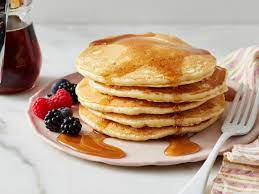

PANCAKE
Home

Description
A pancake is a breakfast dish, a flat cake that's made by pouring batter into a hot pan and frying it on both
sides. Many people like to eat their pancakes with a drizzle of maple syrup. While pancakes can be savory,
they're more often a sweet breakfast food in the US.
Ingredients
- FLOUR
- SUGAR & SALT
- BAKING POWDER
- MILK & OIL
- EGG
Steps
- Combine the dry ingredients.
- Add the wet ingredients and mix.
- Pour or ladle the batter onto the oiled griddle or pan.
- Cook until bubbles form, flip, and cook on the other side.